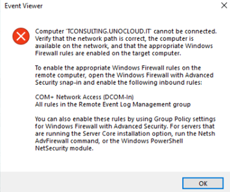

Symptoms
The following warnings are prompted in Netwrix Auditor Health Log:
Failed to process DC: %domain_controller_name%. Failed to connect to remote service control manager. Error details: The RPC server is unavailable. (Exception from HRESULT: 0x800706BA). Make sure that you have administrative privileges, and the Windows Management Instrumentation (WMI) service is running on the target server.
Failed to open the event log. The RPC server is unavailable.
The RPC server is too busy to complete this operation
The following error occurred when analyzing changes for server %server%: Agent operation failed due to the following error: Failed to update the agent on the following server: %server%
Causes
-
Errors resolving a DNS or NetBIOS name.
-
The RPC service or related services may not be running.
-
Network connectivity issues.
-
File and printer sharing is not enabled.
-
TLS 1.2 is not set up.
-
Insufficient server resources.
Resolutions
-
Configure firewall policies.
NOTE: If you are using Windows Firewall, open the Group Policy Object Editor snap-in (gpedit.msc) to edit the Group Policy object (GPO) used to manage Windows Firewall settings in your organization. Navigate to Configuration > Administrative Templates > Network > Network Connections > Windows Firewall, and open either Domain Profile or Standard Profile, depending on which profile you are using. Enable the following exceptions:
-
Allow Remote Administration Exception
-
Allow File and Printer Sharing Exception
-
-
Review the hostname and IP address. Verify the machine is turned on and reachable. Also, please make sure FQDN is resolving to the correct IP address.
-
Verify that the Windows Management Instrumentation service is running and set to auto-start after restart.
NOTE: If you see the following error in the Event Viewer while checking event viewer (Local) connection to another computer, enable inbound rules (COM+ Network Access and all rules in the Remote Event Log Management group) in the target computer. Refer to the following article for additional information: Configuration − Logon Activity Ports: Configure Windows Firewall Inbound Connection Rules ⸱ v10.6.
For additional information on Windows Firewall configuration, refer to the following article: Logon Activity Ports — Configure Windows Firewall Inbound Connection Rules · v10.6.
-
Verify that TCP/IP NetBIOS Helper service is running and is set to auto-start after restart.
-
Verify the Remote Procedure Call (RPC) service is running and set to auto start after restart.
-
Log on the computer where Netwrix Auditor is installed using Netwrix data processing account.
-
Go to Start > Run and type
eventvwrand click OK. -
Right-click Event Viewer (Local) and select Connect To Another Computer.
-
In the Select Computer dialog window, type the name of the domain controller reporting the error in the Another Computer entry field. Click OK to connect to the domain controller.
-
Select Security log. The list should show you valid events entries.
Learn more in Windows Server Troubleshooting: RPC server is unavailable ⸱ Microsoft 🡥.
-
-
Enable TLS 1.2. For additional information, refer to the following article: Сonnection Issue when TLS 1.2 Is Required.
-
RPC connections might be affected due to insufficient hardware resources. Review the hardware resources of the affected server to possibly increase the resource pool. Learn more in Server Hardware Performance Considerations ⸱ Microsoft 🡥.